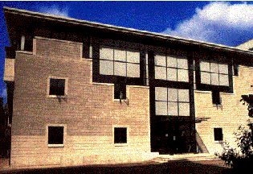
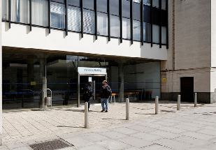

G. E. Fogg Building Queen Mary, University of London has been Highly Commended for its Fogg Building in the Chartered Institute of Buildings Services Engineers, (CIBSE) Building Performance Awards 2012. Judged by a panel of distinguished industry leaders the CIBSE Building Performance Awards recognise, reward and celebrate the best performance, innovation and practice in design, commissioning, construction, installation and operation of sustainable buildings and the manufacturers whose technologies enable energy efficiency. The awards focus on actual, measured performance, not design intent or performance specifications.
The Informatics Teaching Laboratory  The ITL is a purpose-built building designed by the architectural firm MacCormac Jamieson Prichard, who also designed our student village. The Laboratory was made possible by a generous gift from the Wolfson Foundation and substantial funding from the UFC (now HEFCE).
Mathematics Building The School of Mathematical Sciences occupies a building at the western end of the Queen Mary campus known as the 'Mathematics Building', reflecting its construction in 1967 for the then Department of Mathematics. The School office is located in room 101 on the first floor.
Infusion Infusion has recently been refurbished, over the Easter holiday, to a brilliantly high standard. I now features a new simpler layout and bigger range of products, as well as an expanded seating area. Infusion is a brilliant place to pop to for a coffee, snack or a spot of lunch. Two coffee machines make it an easy and cheap place for a quick coffee, and with frequent deals you'll be sure to find a bargain.
Computer Science "We are passionate about computing and its impact on the world, and committed to developing a supportive, friendly and challenging environment for teaching, learning and research."
Drapers Bar and Kitchen Drapers Bar & Kitchen has recently been renovated to provide a relaxed and easy-going environment for students and staff to take a break from work and socialise with friends. We've improved our menu and offer good quality food and options for those with special dietary requirements.
QMotion Qmotion is an industry leading gym that is proud to be different. As well as a large open plan gym, exciting studio timetable and a wide range of additional services – we pride ourselves on delivering great customer service to all our members.
The Great Hall/The People's Palace When the original Great Hall opened in 1887, one and a half million people visited the building in just one year, flocking to the east London venue for entertainment, education and recreation. Following a £6m refurbishment project to restore the building and install new technology, Queen Mary, University of London will relaunch the People's Palace in February 2013 as a venue for both students and the community.
Bancroft Road Teaching Rooms
IRC Building Student Capacity - 20 General Equipment - 11 Tables, 26 Chairs Audio Visual Equipment - Data Projector, Overhead Projector, Screen, 3 Whiteboards
Post Room The Mail Room at the Mile End Campus is located at the rear of the People's Palace and can advise you on any postal issues and problems. Departments are able to collect their post from the Mail Room on a daily basis, or can have it delivered for a small charge.
London Chamber Orchestra LCO was founded in 1921 and has a world class reputation for bringing classical and chamber music to audiences around the world.
Engineering Building The School of Engineering and Materials Science (SEMS) provides outstanding degree programmes coupled with internationally leading research.
Temporary Building The temporary building on the site of the demolished old chemistry building (behind the Queens' Building) is now part of a newly landscaped area that looks pleasant and welcoming. The student facilities that were temporarily located in this building have now been moved back to the Hive, so this building is no longer accessible to students.